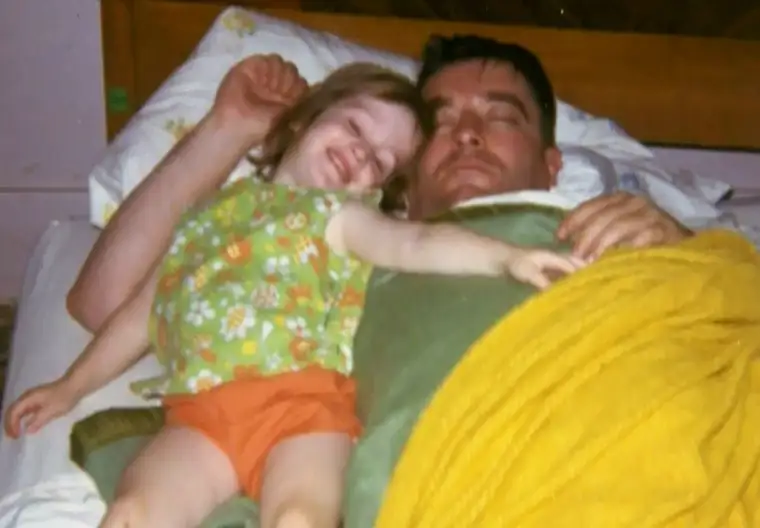

There was perhaps no time I felt more grateful to still be Catholic than at my father’s death.

Perhaps the easiest explanation is that he grew up in a faithful Catholic home, the youngest son of nine children, with a mother devoted to God and her family, in that order. Though I never got to meet Grandma Mary, or “Daught” as they called her, I have heard the stories of her deep faith, and know that she’s been praying for me — and her baby boy — all these years. Even during the 35 years he left the faith, a time that likely left her, for a while, weeping.
And yet, her prayers were powerful, and he did return, fully. My father died a man still in need of physical healing, but I believe spiritually he was the fittest of his life. Though I pray for him often, I have little doubt he is with God, the communion of saints and his loved ones that have gone on before us — including his little grandson, our son who died in miscarriage, Gabriel. The moment Dad died, I said, “You get to see your Mama now.” And I believe the tear that came from him was his response. “Yes.” Yes to God. Yes to love. Yes to the reunion spreading before him.
I realized then that though I, too, had wandered away for some time, not fully gone but not completely convinced I was in the right place, I, too, had found my way back. We’d both returned home to the blessed place where we’d begun our Christian journey, in Jesus’ Church. This brought an immense amount of comfort, aided by all the wonderful Catholic devotions and practices that were ours to utilize and appreciate.
Namely, the Divine Mercy Chaplet, a devotion inspired by Jesus through St. Faustina Kowalska, a humble Polish nun who reminded us of Jesus’ great mercy for us. The prayer, recited on rosary beads, is especially efficacious at death, or in the presence of someone gravely ill. My memory of my mother and I singing this prayer at my father’s deathbed will always be a treasured remembrance and source of comfort.
I had the great privilege and grace to be with Dad not only in his final days, but his final hours, and the experience can only be described, then and now, as holy. In tending to my dying father, I was tending to the suffering Christ, and so Christ was everywhere in that room. I felt it palpably, and deeply. It was a sacred time, even if, yes, extremely sad. My tears were dried by Jesus’ mother, whom I know was near, too.
Last night, on the eve of my daddy’s death six years ago, in the crisp winter night, I stole away to the Our Lady of Guadalupe Adoration Chapel here in Fargo, one of my favorite places to be — a place where the presence of God floods the air like sweet incense — and spent time with Jesus in the Eucharistic host. There, I rested in the memory of that day, when I held my father’s hand as he took his very last breath here, right before he left to fulfill his most important earthly mission, to be with God.
Even six years later, I am overcome with gratitude for the way God arranged things; how I was able to make a temporary home in his hospital room and just love him, to help gently usher his soul into the eternal. His death was early, at 77, and not initially expected, but by the time I reached him in those final days, we saw that his body was shutting down. And so there was nothing left to do, nothing at all, but to love.
In the Adoration chapel last night, I wrote the following reflection about that last hour with Dad:
“Dear Lord…6 years ago…I was camped out at the deathbed of my father, almost like now, here at Adoration. And in a way, I was adoring you — in the suffering Christ, in the tomb of my father. Unable to speak, he was yours already. And yet you, in your great love for us, gave us that gift of time. Of love. Pure love…There was nothing really but love, going in, coming out. It was the first time I’d experienced love like that, in such a primal way. It was a holy time…Our dad did not leave this world a man of influence. His brilliant pen had long gone still. He had nothing to offer, Lord….He was in a sense a beggar. But he was rich in you! He had you back. He had broken through the chains and could see you there, loving him. And because of that – because he believed once more that he was loved purely — he could love us that way too, at least in his heart. Physical limitations made perfect love impossible, but we knew, because you relayed the message, and it was known to us. Love, pure and deep. Thank you, Lord. Please welcome my daddy into your eternal bliss. Love, Rock.”
Being able to share my faith with Dad in those final moments, to be comforted by the sheer beauty of the Catholic Mass that followed at the Holy Spirit Cathedral in Bismarck — even to have the courage and grace to sing at it — will always be a gift. Death is not happy. To lose someone we love is a breach of something beautiful. And yet when we die in faith, or lose those we love in the state of grace, it can be sublime.
Because of my dad’s death, how it went down, and how deeply I was able to access heaven itself through being right there with this man who had already been resurrected in faith in life, and to share a glimpse of the glory with him as offered in particular through our beautiful Catholic faith, I find all this one more shining reason why, despite everything, I am still Catholic, thanks be to God.
Q4U: When has God revealed heaven to you?